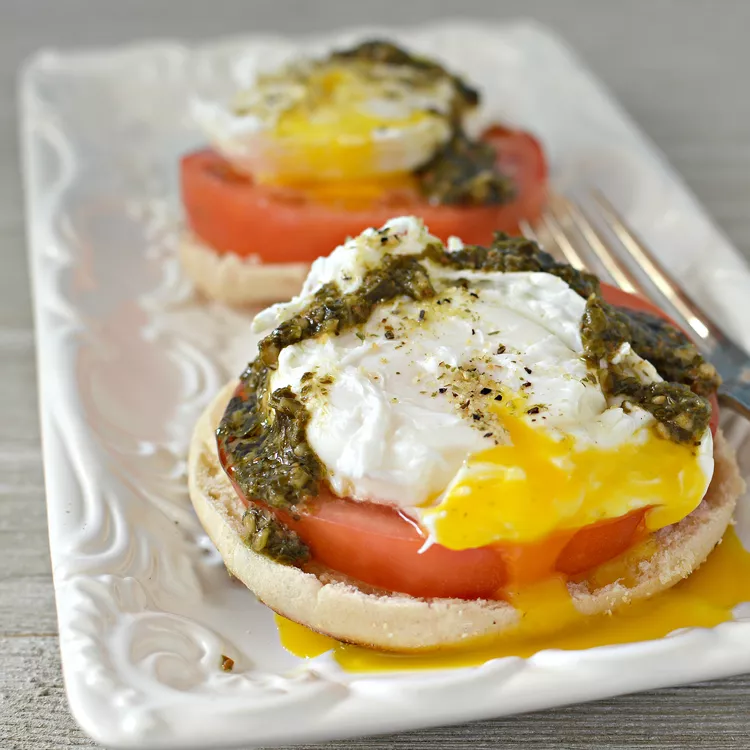

Poached Eggs Caprese
These caprese eggs are a delicious dish inspired by eggs Benedict with mozzarella, tomatoes, and pesto.

Ingredients
- 1 tablespoon distilled white vinegar
- 2 teaspoons salt
- 4 eggs
- 2 English muffin, split
- 4 (1 ounce) slices mozzarella cheese
- 1 tomato, thickly sliced
- 4 teaspoons pesto
- salt to taste
Directions
- Fill a large saucepan with 2 to 3 inches of water and bring to a boil over high heat. Reduce the heat to medium-low, pour in vinegar and 2 teaspoons of salt, and keep water at a gentle simmer.
- While waiting for water to simmer, place a slice of mozzarella cheese and a thick slice of tomato onto each English muffin half, and toast in a toaster oven until cheese softens and English muffin has toasted, about 5 minutes.
- Crack an egg into a small bowl. Holding the bowl just above water's surface, gently slip egg into simmering water. Repeat with remaining eggs. Poach eggs until whites are firm and yolks have thickened but are not hard, 2 1/2 to 3 minutes. Remove eggs from water with a slotted spoon and dab them on a kitchen towel to remove excess water.
- To assemble, place a poached egg on top of each English muffin. Spoon a teaspoon of pesto sauce onto each egg and sprinkle with salt to taste.